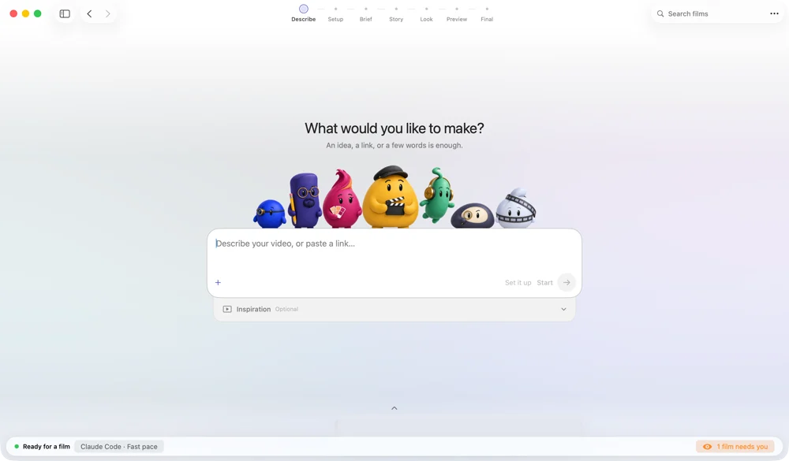
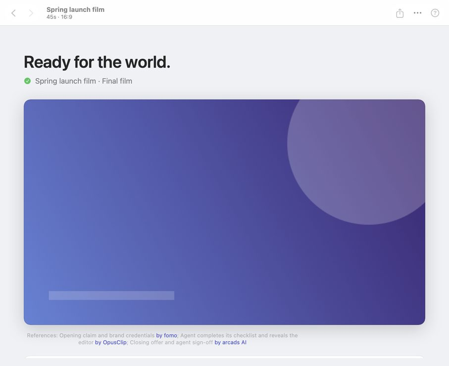

RasanAI Studio for Mac
Describe a film.
Direct it from there.
A sentence and your footage go in. A finished film comes out. In between, RasanAI asks for your taste at five moments that matter.

Behind that box, a whole crew.
Meet the director
Rasan runs your film.
From your first sentence to the final export, Rasan directs the whole film. Rasan hands each job to the specialist who does it best, keeps the film on one idea, and stops only at the five calls where your taste decides: brief, story, look, animatic and final.


One director. Six specialists. Five calls are yours.
RasanAI is a crew with names and craft. They research, write, design, move, check and cut your film, and stop for you at the five calls that shape it.
The big calls stay yours.


Your film has a pager.
Squeak is a pager for your coding agents, with a duck. Now it knows when your film needs you, too.
On your Mac
Squeak tells you first.
The moment the crew stops for one of your five calls, Squeak sends the call to you, with the film and what is waiting.
Away from it
Step away. The call follows you.
Squeak for iPhone shows the same call, with the same choices, wherever you are.
On your iPhone
Answer with a tap.
Approve the brief, choose the story, pick the look, watch the cut. The preview and the final come as small copies made for the phone.
Back on your Mac
Already moving.
Your answer goes into the same run and Studio carries on: here, the film is done and ready for the world.
 1Tue 9:41
1Tue 9:41

Spring launch film
RasanAI · Final · waiting on you
Rasika checked every scene. The last call is yours.
Watch the final cut.
Replies go to this film's run on your Mac.
When it’s done, it’s yours.
Your projects
Your film stays yours.
Every film is a project on your Mac, with its drafts, its notes and its export in one place.
- A folder for every film. Projects live in a local Documents/RasanAI library. Search, rename, archive or duplicate drafts. Files you add are copied in, and your originals are not changed.
- Every version kept. Your notes and each version of the film are kept, and the final screen has a version picker.
- Export from Studio. Play the finished film in the app, then export it. If something is off, say so and RasanAI makes the change.

Questions
Before you download.
What do I need to run it?
An Apple Silicon Mac running macOS 14 or newer.
Does it cost anything?
RasanAI Studio is free and open source under the MIT license. It uses your own Claude Code or OpenAI Codex, installed and signed in, so usage counts toward your own plan.
Is it finished?
No. It is a community beta. The real-agent generation flow is still in beta and not fully verified, so expect rough edges. Presenter films, where you film yourself on a green screen, are newer still and have experimental limits: read them in How it works. Please tell us what breaks.
What happens the first time I open it?
This beta is ad-hoc signed and not yet notarized by Apple, so macOS asks you to confirm. Drag RasanAI Studio into Applications, right-click it and choose Open, or use Open Anyway in System Settings → Privacy & Security. After that, signed updates arrive on their own. Full installation help.
What about rendering tools?
Use Help → Prepare Rendering Tools in the app. It installs whatever is missing.
That’s the story. Your turn.
Make your first film.
Download for MacCommunity beta, ad-hoc signed. Works with your own Claude Code or OpenAI Codex.Release notesChecksumPrefer the terminal?